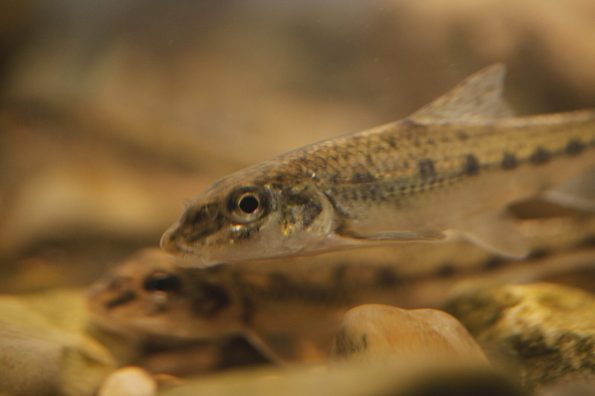

Rozpoznawanie
Najważniejsze cechy
Wydłużone, walcowate ciało ma ciemne, nieregularne plamki po bokach. Pysk jest dolny, a przy obu jego kącikach wyrasta po jednym krótkim wąsiku — to najpewniejsza cecha terenowa. Łuski są wyraźne, płetwy zwykle szarzawe; dorosłe ryby najczęściej mają kilkanaście centymetrów.
Siedlisko i występowanie
Gdzie żyje
Zasiedla przede wszystkim rzeki i strumienie o spokojnym do umiarkowanego nurcie, z piaskiem, żwirem lub drobnymi kamieniami. Występuje szeroko w Polsce, także w jeziorach połączonych z ciekami, lecz unika miejsc silnie zamulonych i ubogich w tlen.
Biologia i rola w ekosystemie
Pokarm i rozród
Żeruje przy dnie na larwach owadów, małych skorupiakach i innych bezkręgowcach. Tarło przypada zwykle na późną wiosnę i wczesne lato; ikra składana jest na podłożu. Jest ważną zdobyczą dla większych ryb i ptaków, dlatego jego obecność ma znaczenie w całej sieci pokarmowej.
Ochrona, prawo i znaczenie dla wędkarza
Status i zagrożenia
W ocenie IUCN gatunek ma kategorię najmniejszej troski, lecz lokalne populacje reagują na regulację koryt, zamulenie i zanieczyszczenie. Status globalny nie zastępuje rozpoznania stanu konkretnej rzeki.
Odpowiedzialne postępowanie
Kiełb nie jest rybą, której należy podporządkowywać wędkowanie. Przypadkowo złowioną sztukę odhacza się mokrymi dłońmi, bez trzymania na brzegu, i od razu wypuszcza. Dla konkretnej wody obowiązuje zezwolenie gospodarza; brak krajowego wymiaru w wykazie nie jest zgodą na zabranie.
FAQ — najczęstsze pytania
Czy kiełbia wolno łowić i zabrać?
Kiełb nie jest gatunkiem chronionym — w ocenie IUCN ma kategorię najmniejszej troski — ale brak krajowego wymiaru ochronnego w wykazie nie oznacza zgody na zabranie. O tym, co wolno, decyduje zezwolenie gospodarza konkretnej wody. W praktyce przypadkowo złowioną sztukę odhacza się mokrymi dłońmi i od razu wypuszcza.
Jak rozpoznać kiełbia?
Najpewniejszą cechą terenową jest po jednym krótkim wąsiku w każdym kąciku dolnego pyska. Ciało jest wydłużone i walcowate, z ciemnymi, nieregularnymi plamkami po bokach, łuski wyraźne, a płetwy zwykle szarzawe. Dorosłe ryby mają najczęściej kilkanaście centymetrów.
Gdzie występuje kiełb?
Zasiedla rzeki i strumienie o spokojnym lub umiarkowanym nurcie, z dnem piaszczystym, żwirowym albo drobnokamienistym. Występuje szeroko w Polsce, także w jeziorach połączonych z ciekami, ale unika miejsc silnie zamulonych i ubogich w tlen. Z tego powodu bywa traktowany jako wskaźnik czystszego odcinka rzeki.
Czy kiełb nadaje się na przynętę?
Nie należy z góry tak zakładać. Użycie żywej ryby jako przynęty regulują przepisy i regulamin danej wody, a drobne karpiowate bywają mylone z gatunkami chronionymi o podobnej sylwetce. Bezpieczniej jest rozpoznać rybę spokojnie i wypuścić ją, niż ryzykować pomyłkę z gatunkiem objętym ochroną.
Źródła i weryfikacja
Tożsamość i zasięg: FishBase: Gobio gobio oraz GBIF: Gobio gobio. Ochrona: polski akt prawny wskazany poniżej. Dostęp i sprawdzenie: 2026-07-24. Opisy są edukacyjne: źródła globalne nie potwierdzają stanu konkretnego stanowiska.
Wędkarstwo: Karta nie zastępuje zezwolenia ani regulaminu. Zasady wymiarów, okresów i lokalnych zakazów przed wyjazdem sprawdza się w aktualnym rozporządzeniu dotyczącym amatorskiego połowu ryb oraz u gospodarza wody.
Pochodzenie zdjęcia: Michal Maňas / User:Snek01, CC BY 2.5; strona pliku i warunki licencji. Lokalny JPG jest zachowanym plikiem źródłowym, a pliki .webp i .avif są jego technicznymi wariantami.
Tożsamość biologiczna i źródła
Nazwa łacińska: Gobio gobio. Grupa atlasu: spokojny żer. Alias: kiełb pospolity, gudgeon.
Źródła: FishBase: Gobio gobioGBIF: Gobio gobio. Dostęp: 2026-07-17. Zakres: tożsamość taksonomiczna i nazewnictwo oraz, gdy wskazano, ocena ochrony; bez potwierdzenia lokalnego występowania, stanu łowiska ani zasad połowu.
Porównanie taksonomiczne
Porównaj z kartą Krąp. Obie karty prowadzą do osobnych rekordów źródłowych; porównanie nie jest kluczem oznaczania w terenie ani gwarancją wyniku połowu.